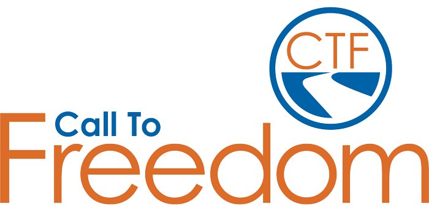
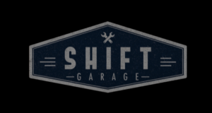

The Sioux Falls Hope Coalition focuses on narrowing the achievement gap in our community through one simple strategy: Ensuring that every child gets a chance to attend preschool. Supported by business leaders, the United Way, and nonprofits, the coalition is seeking to place children currently on a waiting list for subsidized preschool into existing, high quality faith-based programs.
Central’s Involvement: Central Church Downtown Preschool is partnering with the Sioux Falls Hope Coalition to provide educational opportunities for all children in the Pettigrew Heights community, regardless of their family’s financial situation.
How You Can Get Involved: Central Church Downtown Preschool has a variety of different options for volunteering. We need bus riders, classroom, lunch, and field trip helpers. To find out more, contact Jessi Copeland at
jessi.copeland@centralsf.org
Hope Harbor offers family-style care for teens as they heal from a variety of issues that are unfortunately commonplace for youth today. These include past abuse, trauma, anger, substance use, mental health issues, exploitation, self-harm, suicidal ideation, anxiety, attachment issues, and more. They work with ordinary kids who are healing from extraordinary things; each one a child of God, loved by the Savior.
Central's Involvement: The Kingdom Fund and Elders voted to use Central’s tithes and offerings to help Hope Harbor with innovative staff trainings and ongoing ministry costs in 2023.
How You Can Get Involved: Hope Harbor’s Parker facility is large and is always in need of all kinds of volunteers. To find out more, reach out to the Site Director Amanda Dent at
amanda.dent@hopeharbormn.org
Grace Team Jail Ministry is a South Dakota based ministry through Converge Heartland, whose mission is to share the hope of the gospel with inmates and staff at the prisons and jails we serve. They are currently in seven facilities throughout the state of South Dakota.
Lifeline Children’s Services of South Dakota equips the body of Christ to manifest the gospel to vulnerable children, women, and families. Lifeline helps the church live out God’s call in James 1:27 to “care for orphans and widows in their distress” in these areas: adoption, pregnancy ministry, global orphan care, and family preservation.
Central's Involvement: Central Church makes a monthly donation to help cover supplies and staffing costs. We also provide volunteers for their Harbor Families ministry.
How You Can Get Involved: Lifeline has a variety of different options for involvement in the areas of adoption, respite care, and support care. To learn more contact
Chuck Jespersen, Director.
Renewal 58 is a non-profit that focuses on buying distressed properties in Pettigrew Heights, refurbishing them, and renting them out at a rate that is affordable for lower income people. When residents join the program, they will be paired with a case worker and a mentor to help them work through challenges they face in order to improve their quality of life. Their model serves both the people in the homes and improves the neighborhood of Pettigrew Heights. As of now, Renewal 58 has 21 units across seven properties.
Central's Involvement: In 2021 Central provided the funds to buy a 10 unit home in Pettigrew Heights. The church invites these and other Renewal 58 residents to several events per year, and provides other enriching opportunities through Central Renewal. (Find out more about Central Renewal on the page below.)
How You Can Get Involved: Renewal 58 periodically needs volunteers to do yard work and maintenance on the homes. To find out more or get involved contact
Nathan Pruett, Outreach Pastor.
Call to Freedom

Call to Freedom brings wholeness to all individuals impacted by sex and labor trafficking and commercial sexual exploitation by navigating a healing path
through their continuum of care model.
Central's Involvement: In 2021, The Kingdom Fund and Elders approved a $100,000 gift to Call to Freedom to help with the building of the Marissa House. This home allows women coming out of trafficking to have a safe and supportive home environment with their children.
ResGen exists to present the Good News of Christ to thousands of people and help them follow Him for a lifetime. Since 2010, ResGen has impacted over three hundred thousand people at conferences, schools, festivals, and other events across the country. They also host several annual events in Sioux Falls, including the ResGen Men’s Summit, Date Night Comedy, and a parenting event.
Central's Involvement: The Elders voted in 2021 to give a one-time gift to ResGen to help them with startup costs for their Podcast ministry. Men’s Summit and Date Night Comedy are hosted at Central Church.
Contact Jeff Nelson to Serve
M.K.A. is an abbreviation for an Amharic phrase that means “Equipping for Christ’s Ministry.” M.K.A.’s mission is to equip pastors in Ethiopia through seminary education and seminars. M.K.A. also does a variety of outreaches to the least of these throughout the country of Ethiopia.
Central's Involvement: In January of 2022 the Kingdom Fund at Central donated $40,000 for emergency food and medical supplies to be distributed in the Tigray region. Central has also sent two teams to Ethiopia to work with M.K.A. through street evangelism and feeding programs in the city of Addis Ababa.
To learn more about ways to get involved contact
Kendra Michael, Central’s Ethiopia Initiative Liaison.
The Timothy Initiative
The Timothy Initiative (TTI) exists to advance Christ’s Kingdom by multiplying disciples and disciple making churches around the world. It's their vision to see multiplying, disciple making churches in every place and people group.
Central's Involvement: Central and TTI began their partnership in 2020. To date through your generosity and gifts from the Kingdom Fund, Central has donated almost $750,000 to TTI to see over 2,200 churches planted in Ethiopia. Central attendees and staff have also participated in multiple vision trips through TTI.
In 2022, The Kingdom Fund and the Elders gave a financial gift of $25,000 for food and care for Ukrainian pastors in response to the crisis in Ukraine caused by the Russian invasion. We did this in conjunction with other Converge Heartland churches from our area.
Shamida exists to provide high quality holistic care for orphans and vulnerable children, families, and the community. Shamida has two facilities. One home has existed for about 10 years and has about 30 children, many of whom are children with disabilities. Recently they joined in collaboration with the Ethiopian government to provide care for the 150+ children at Kebebe Tsehay.
Central's Involvement: In 2022 The Kingdom Fund and the Elders approved a gift of $108,000 to purchase an industrial generator, dishwasher, washer and dryer for use at Kebebe Tsehay. Kendra Michael, from Central Church, is currently a permanent volunteer for Shamida in Ethiopia.
To learn more about ways to get involved contact
Kendra Michael
Every child deserves the love of a healthy family. But children who have been orphaned or abandoned are often alone, separated from siblings, and left to fend for themselves in orphanages or on the street. Selamta recreates and empowers families so these children can grow up knowing their God-given dignity and worth, healing generational brokenness, and transforming lives. Selamta’s holistic, community-integrated, permanent approach brings children from institutions and the street into the loving arms of a healthy family where hope and healing are found.
Central's Involvement: In 2022 The Kingdom Fund and the Elders approved the sponsorship of a Forever Home at the amount of $3,000 a month. Forever homes are made up of one mom, an “auntie”, and eight previously homeless or abandoned children. In 2023, Central took a team over to Ethiopia to host an English camp for the Selamta children, as well as children from the surrounding community. This provided the children with the opportunity to be immersed in the English language and converse with native speakers, as well as learn five Bible stories.
To learn more about ways to get involved contact
Kendra Michael,
Central’s Ethiopia Initiative Liaison.
Fair Market is not your typical grocery store. Their slogan is to “Make food affordable and accessible in a sustainable way.” They do this by providing healthy food options at reduced rates in “food deserts” within the city of Sioux Falls.
Central's Involvement: In 2022 The Kingdom Fund and the Elders approved a gift of $82,000 to help Empower open Fair Market West to end a “food desert” that had appeared in Sioux Falls with the closing of the Hy-Vee on Kiwanis.
To get involved at Fair Market you can message them on their
Facebook page or stop by one of their two locations.
SHIFT Garage

Shift Garage exists to help those they serve to fully realize the plan Jesus Christ has for their lives. They do this through a combination of vehicle repair, vehicle donation, and maintenance classes.
Central's Involvement: In 2022 The Kingdom Fund and Elders approved a gift of $125,000 to allow Shift Garage to move to a more accessible location, expand their services, increase advertising, and hire a full-time mechanic.
How You Can Get Involved: SHIFT Garage is always looking for volunteer mechanics and Lobby Hosts. To find out more contact
Joe Smith, Founder.
Collision’s mission is to equip students to become faithful followers of Christ who share the gospel, multiply, and transform their schools and the world around them. With that, they are connecting and working with local churches to partner with Christ-following middle and high school students. They empower students through mentoring, training, and other resources to help equip them to share the hope of Christ in their schools and with their peers.
Central's Involvement: In 2023 The Kingdom Fund and Elders approved a gift of $25,000 to help Collision expand its programs into previously under-reached areas here in Sioux Falls.
The Naomi Project’s vision is for a just and fair future for all workers in South Dakota. They have an emphasis on connecting with workers who are experiencing labor trafficking, building relationships of trust, and moving forward in reporting abuses to law enforcement while supporting impacted workers with direct services.
Central's Involvement: In 2023 The Kingdom Fund and the Elder board approved a one-time financial gift for The Naomi Project of $70,000, so that they could hire two part-time Case Managers to better serve their clients.
How You Can Get Involved: If you are bilingual (primary need is Spanish) we are in need of mentors for clients, translators during appointments, and translators for documents. If you have connections with business owners in the food/construction industries, help us connect to provide trafficking awareness. Contact
Jordan Bruxvoort, Director, for more.
The Gathering Well supports, educates, and inspires adoptive and foster families with relevant connection opportunities and resources. They recognize Jesus Christ as the source of hope and healing, and believe that no one should be on this journey alone.
Central's Involvement: In 2023 The Kingdom Fund and the Elders approved a gift of $12,000 to help The Gathering Well continue to serve its ever growing client base. They meet monthly in our building.
The Banquet’s mission is to provide a welcoming place where people can gather, receive nourishment and experience love in action, and assist volunteers in providing food and fellowship to those served through the ministry of The Banquet. They are vigilant in identifying and fulfilling the needs of the hungry in our diverse community and in encouraging the health and wellness of their guests.
Central's Involvement: At the start of each school year, Central partners with the Banquet to provide backpacks filled with supplies to low income families. A group from Central serves breakfast every first Wednesday. We also provide a monthly donation.
Community Outreach’s mission is to partner in Christian ministry to share hope and provide tools for daily living. They do this through a mixture of rent assistance, case management, mentoring, and life skills training.
Central's Involvement: Central uses Community Outreach to help us distribute our benevolence funds wisely. We also regularly use their Genesis Program to train people in our Central Renewal ministry on healthy budgeting and goal setting techniques.
Lifelight’s vision is to “take the Church outside the walls” to reach the lost, bring the body together to accomplish the great commission, and challenge the body to get involved in ministry. This ministry involves many church denominations, working together in unity based on the truth of God’s Word and the essentials of the Gospel.
Tim and Sheila Steele serve as a Divisional Manager and Operations for Live Events for FamilyLife, a division of the interdenominational, parachurch Cru, which focuses on marriage, parental ministry. The mission of this ministry is to equip and develop Godly marriages and families to change the world. Beyond this ministry, Tim and Sheila mentor and disciple married couples and lead other FamilyLife events.
Heather Carr works with Cru. She has been with this ministry for 28 years working on college campuses in the US and in East Asia with the desire to see college students have a chance to know someone who truly follows Jesus.
Her current position is the Mission Director helping give leadership to our college ministries in the midwest. They are called “Cru Heartland” which includes 10 teams across 6 states- North Dakota, South Dakota, Iowa, Missouri, Kansas, and Nebraska. Each team consists of anywhere from 4-20 staff and all of our teams are reaching out to at least 4 schools with our metro teams reaching up to 30. She comes alongside the team leaders to coach them as they lead their teams to grow closer to the Lord and in the mission where God has called them to go.
The Waddell’s serve through YWAM on the island of Kona. Jeff is teaching people in developing nations how to get safe drinking water using simple and affordable approaches. Melissa is providing healthcare education both for staff, students, and those in developing nations.
Ted uses his skills and experience in radio station technical operations to support Christian radio stations outside the USA. In addition, he works on designing unique equipment that our partner ministries need, but can’t buy. His two biggest projects right now are working with a studio upgrade for Radio Lumiere in Port-au-Prince, Haiti, and a project designing a special kind of electrical equipment protector that will allow people to continue using electronic equipment, even when the electrical voltage is too high. Jean works as a bookkeeper in the accounting department, keeping up with the many financial transactions needed to facilitate the equipment shipments and other support that SonSet Solutions, Inc., gives to hundreds of radio stations.
DAVE AND CAROL
Dave serves as the International Director of Asia, with Converge, while being located in Minnesota with his wife Carol. They are working to bring about a gospel-movement among the least-reached peoples of Asia, laying strong foundations for global workers, building bridges with national partners, and opening doors to new areas of work. Their vision statement for all their workers worldwide is asking God for a gospel movement among every least-reached people group in our generation.
The Emmanual Disability Association and Workshop located in Soddo, Ethiopia is often the only option. Melese Eyob, a founder of the association and workshop makes dreams a reality for disabled Ethiopians.
Melese knows these struggles firsthand. He has had Polio since childhood and lived on the streets himself, until he was helped by Soddo Christian Hospital 15 years ago with surgery. Even with the surgery, he cannot get around without crutches. He started the association and workshop due to the dire need of medical supplies and job opportunities for the disabled. The workshop not only improves the lives of those they serve, but also those that they employ. Most of the employees are disabled, many of whom were living on the street before being offered shelter, training, and a job by Melese. He and his team work tirelessly with the minimal supplies available to them.
Central's Involvement: To date Central has distributed 94 wheelchairs and 40 prosthetic limbs through Emmanual to people in need in Soddo and Hosanna, Ethiopia.
To learn more about ways to get involved contact
Kendra Michael,
Central’s Ethiopia Initiative Liaison.
Adams Thermal Foundation operates two K-12 schools for at-risk children in southwest Ethiopia. These schools also administer self-help programs so that women and mothers of students can learn business and job skills. Together, these programs seek to break the generational cycle of poverty and lift children and their families out of despair and hopelessness.
Adams Thermal Academy Hosanna (ATAH) operates in a city located 115 miles southwest of the capital, Addis Ababa. The school only enrolls students who would otherwise be unable to obtain an education, due to poverty, disease, or the loss of one or both parents. ATAH is one of the top performing schools in the region and serves as an example for other public and private schools there. ATAH also operates a full-day academic schedule, while public schools typically offer only half-day opportunities.
Central's Involvement: Central has been sending teams to Ethiopia through Adams Thermal since 2015. Through your generosity and the Kingdom Fund we have helped build two high schools, completed a water project for the community of Ottoro, developed a school feeding program, and an spoken English language program. Several hundred children are also sponsored at the schools by Central attendees.
To learn more about ways to get involved contact
Kendra Michael,
Central’s Ethiopia Initiative Liaison.
Central Church sponsors five indigenous missionaries in the country of Ethiopia who work for New Life International Joshua Ministry. The work is hard and dangerous, but these individuals have committed their lives to seeing people come to know Jesus in unreached parts of Ethiopia.
Kendra is Central’s Ethiopia Initiative Liaison. She has a residence in Addis Ababa, the capital city of Ethiopia. Having someone in-country allows Central to grow deeper and more informed connections with our partners in Ethiopia. We are able to witness and assess specific needs within Ethiopia and step in where the Lord leads. As Central’s teams travel to Ethiopia for short-term mission trips, Kendra is able to prepare for and receive them. Kendra is also working with one of our partners, Shamida Ethiopia, as a permanent volunteer.
Shayla serves as an Architect and missionary with Engineering Ministries International (EMI) in Phnom Penh, Cambodia. EMI is a Christian non-profit made up of architects, engineers, surveyors, and construction managers who value Design, Discipleship, and Diversity. EMI’s worldwide mission is to develop people, design structures, and construct facilities which serve communities and the Church—facilities like hospitals, schools, water systems, and more. Since joining staff in 2020, Shayla has had the privilege of serving ministries such as CURE Children's Hospital of Zimbabwe with a master plan and clean water system, Bongolo Hospital in Gabon with a design for a Maternity Center, and Church of the Holy Spirit in South Africa with the construction of a new Community Center. Shayla started her journey in ministry during a Central Church Youth Group mission trip to Haiti in 2012. God used this experience in a developing country recovering from a major earthquake to reveal to Shayla the transformative power of architecture, and His desire to use her talents to build His Kingdom and restore the world through design.
Jason Hopkins is one of very few Sign Language Bible Translation Consultants worldwide. His passion is to help sign language translators create translations that communicate God's Word clearly, accurately and naturally in the various sign languages, giving the Deaf the opportunity to see the Bible in their own language.
The Hopkins currently work with a team of Deaf Ghanaians to translate the Bible into their sign language. The goal is to produce scriptures that will be used by the Deaf in Ghana for their spiritual growth.
Jason’s main roles are exegete and team mentor. Exegeting scriptures for translation requires a wide range of skills that are developed over time with a significant amount of training. A major goal is to help train the team to do as much as possible on their own so they can reach independence. The more skills and abilities they have the more ownership the Deaf community has over the translation work. While doing the exegesis for the project, Jason is also training the team to take over exegesis.
If you’d like to get their newsletters or information about how to support them financially check out this website: www.tinyurl.com/wycliffe-hop-signup
Peter and Laurel Olson have served at Black Forest Academy (BFA) since 2006. BFA, located in Kandern, Germany, is a school for students in grades 5-12. Peter teaches high school math, physics and computer science and chairs the math department at BFA while Laurel runs the admissions office.
BFA's core purpose is to help missionary families continue in the work God has given them by providing for the educational needs of their children. In Grades 9-12, students are able to participate in BFA's boarding program. Families of BFA students live and serve in over 50 different countries throughout Western & Eastern Europe, Africa, Asia, and the Middle East.
Having been in education for over twenty years, Mandy Budig is passionate about students and coaches. Having been impacted personally by FCA on Augutana’s campus over 20 years ago, she is excited to now have the opportunity to join the FCA staff. She has witnessed how our youth are under attack and she is honored to support middle school students, high school students, and staff as they seek to strengthen their walk in the Lord. Mandy will be serving the schools in southeastern South Dakota. She will be helping to start and support huddles on middle school and high school campuses, bringing the Word of God to the students and coaches right on their campus.
Larry and Mary Caldwell are missionaries with Converge. They lived in Asia off and on across three decades, with their last 21 years in Manila, Philippines. There, Larry was a Professor and Academic Dean at Asian Theological Seminary, while Mary taught ESL to the children of missionaries at Faith Academy. In 2011 they returned to the USA. Larry became the Director of Training and Strategy for Converge International Missions, as well as Chief Academic Officer and Dean, and Professor of Intercultural Studies and Bible Interpretation, at Sioux Falls Seminary. Mary became a Missionary Assessment Advisor for Converge, as well as an ESL teacher to refugees and immigrants in partnership with Lutheran Social Services and the Center for New Americans.
Greg is the Director of Incarcerated ministries with Converge Heartlands. He works in the Minnehaha county jail and is also the Pastor of Prison Lighthouse Fellowship.
Justin and Danielle work for the Jesus Film Ministry to help bring the gospel to people in their heart language. There are 6,500 languages in the world yet the Bible says that every tribe, tongue, and nation will hear the good news… How is this possible? Their goal is to help translate the gospel of Luke, and dub it into the Jesus Film, so that no one has to learn a new language in order to hear about Jesus. It’s illegal to be a Christian in the countries that they work in, so for security reasons, please reach out to Central’s staff to contact this couple.
Fellowship of Christian Athletes (FCA) is on the campus of Augustana University, where Lindsey serves as a full time staff person. She works to develop relationships with coaches and athletes to help them know Jesus as their personal Lord and Savior. She establishes ministry on campus through relationships, groups, and events, so that every ear can hear the name of Jesus. On a regular basis, she disciples students/coaches, leads bible studies, feeds coaches and athletes, attends practices and serves as a team chaplain.
Over the last 10 years, Tom Henderson, founder of Restoration Generation, has spoken to over 250,000 people across the country at conferences, festivals, schools and other events with one mission in mind: Restoring generations of relationships – with God and with each other.
In Sioux Falls, Restoration Generation hosts the annual Res Gen Men’s Summit which encourages and equips over 1000 men to pursue Christ, lead their families and live out their faith in the workplace. Res Gen also hosts 2 Date Night Comedy marriage events each year, a parenting conference and monthly youth leader luncheons that unites youth workers around the common mission of reaching teens and families for Christ.
Dusty and Allison work for Central’s church planting partner, The Timothy Initiative (TTI). Dusty is focusing his time on strategic leadership within various departments of TTI and Allison is using her gifts in the area of event planning to accelerate church planting efforts. Their heart remains focused on helping reach Unreached People Groups (UPGs) through evangelism, discipleship and church planting.
Desi has served with Cru (Campus Crusade for Christ) for over 10 years now. Cru is about helping every student on campus come to know Christ, be built up in their faith, and then sent out to teach the world with the good news of the Gospel. Desi lives that out in two ways- first by serving on the 7 campuses the local SD team works on- SDSU, USD, DSU, LATI, NSU, MTI, & WIT. While there, she leads a bible study of women, disciples students one on one, and shares the Gospel on campus. Desi is also the program director of a Cru Winter Conference that hosts close to 1000 students every winter in Minneapolis MN.
Harlan’s Prison Ministry started in 2007 where he began raising his own funding for his evangelism mission. As a prison chaplain, he has the privilege of sharing the Gospel with the inmates. His mission is to lead men to Christ. He lives this out by leading counseling sessions and bible studies with the men in Sioux Falls’ local prison. He pours his heart out to these men as he disciples them to live out their lives as faithful men of Christ.